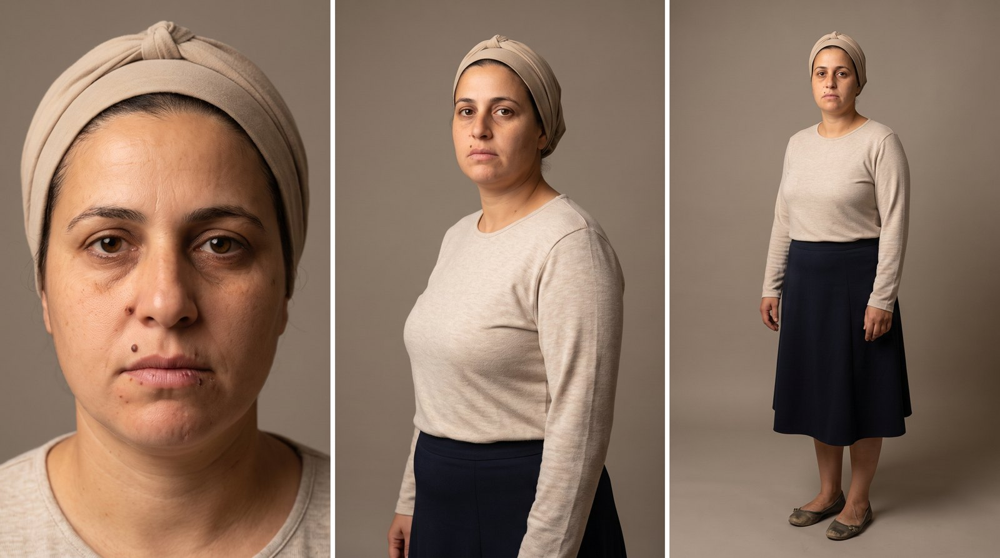
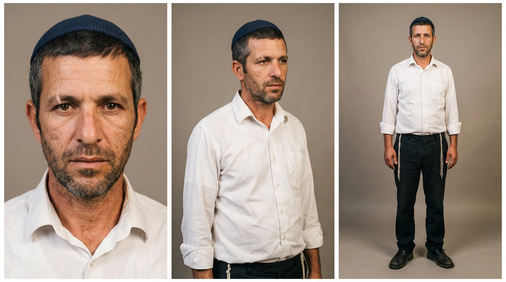
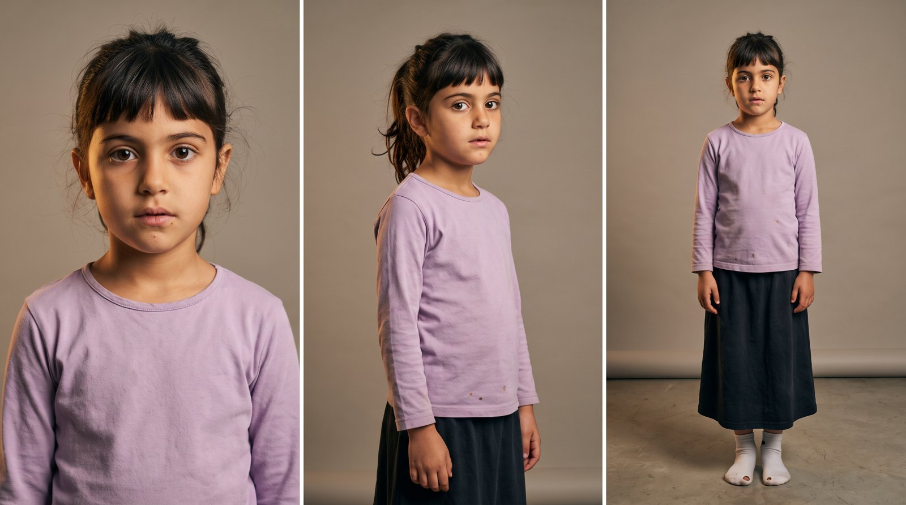
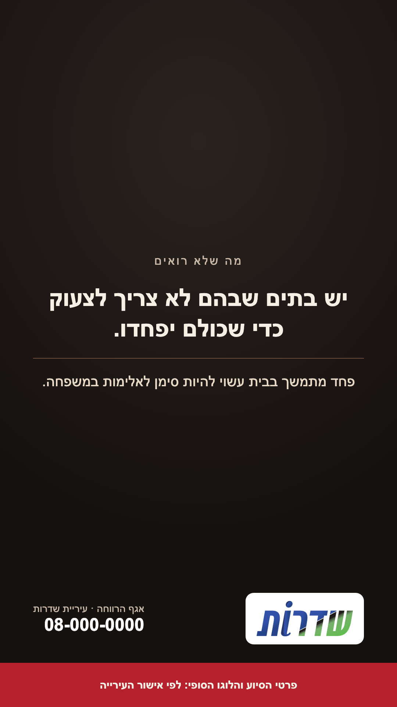

אגף הרווחה · עיריית שדרותקמפיין ליום המאבק באלימות במשפחה
בהפקת
בבית שבו שוררת אלימות רגשית, צליל המפתח בדלת מספיק כדי שהאם והילדה יקפאו. האב נכנס בשקט, סורק, ואף אחד לא צועק. הפחד הוא השגרה.
כל דמות מוצגת בשלוש זוויות: פנים, שלושה-רבעים וגוף מלא, בלבוש של הסרטון. ככה היא תיראה בכל השוטים.

האםבת 39, דתייה. כיסוי ראש בז' פשוט, חצאית כחולה ארוכה, חולצה צנועה בגוון שיבולת. פנים עייפות ונעימות.
האבבן 44, דתי. כיפה סרוגה כחולה, חולצה לבנה מכופתרת, ציצית נראית, מכנסיים כהים. מראה רגיל לגמרי.
הילדהבת 8, קוקו, עיניים גדולות, חולצה סגלגלה וחצאית כהה. מבט שקט ודרוך. הדירהמטבח פתוח לסלון, שולחן אוכל, ציור על המקרר, צעצוע על השטיח, ודלת הכניסה בעומק. אור ערב חם, אור קר יותר מחדר המדרגות.
הדירהמטבח פתוח לסלון, שולחן אוכל, ציור על המקרר, צעצוע על השטיח, ודלת הכניסה בעומק. אור ערב חם, אור קר יותר מחדר המדרגות.לכל שוט: מה רואים, מה שומעים, איך המצלמה מצלמת, מה האור והקומפוזיציה, ומה הצופה אמור להבין ברגע הזה.
כל הטקסטים נבנים בעריכה, בעברית, באזור הבטוח של אינסטגרם. הנוסחים כאן לאישורכם.

כרטיס סיום (דוגמה, סרטון 01)
חמשת הסרטונים מופקים דרך Efect, בהובלת אוראל לוי: תסריט, בימוי, יצירת הדמויות והסצנות, עריכה, סאונד וטקסטים, עד חמישה סרטונים מוכנים לפרסום.